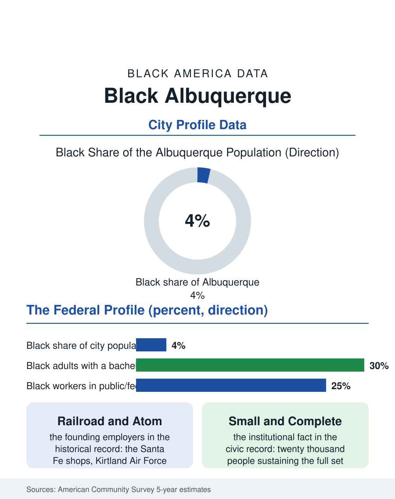

Black Cities
High Desert: Black Albuquerque
Railroad shops, an air base, and atomic laboratories built a small, professional Black community in the high desert. The Albuquerque file.

Albuquerque's Black community, some twenty thousand people in a city of about five hundred sixty thousand, is one of the interior West's oldest small Black populations, assembled by the railroad, the military bases, and the atomic laboratories, and sustained through the decades when New Mexico's Black share hovered near two percent. The census counts a community of about three and a half percent, professional in profile, institutionally dense, and historically specific in ways no other file in this atlas duplicates. This article reads the Albuquerque file.
Railroad, Bases, and Laboratories
The formation story begins with the Santa Fe Railway's shops, among the largest employers in territorial New Mexico, which drew Black railroad families whose descendants still anchor the community, and with the military century that followed: Kirtland Air Force Base and the Sandia laboratories turned Albuquerque into a federal company town, and the federal government's mid-century hiring, imperfect and contested as it was, opened technical and professional posts to Black workers that the private economy of a small western city did not. The result, visible in the survey data to this day, is an occupational profile unusual among small Black communities: elevated shares in government, engineering support, and the skilled technical trades, a Black professional class employed substantially by the laboratories and the base and the university, and a median Black household income that compares more favorably to the city's overall median than in most metros in this atlas. The neighborhoods carry the history, the South Broadway and Martineztown-adjacent districts, and the community's institutions, its churches, the state's NAACP conference, the Black cultural programming of the fairgrounds and the university, punch at a weight the population share would not predict.
The Numbers in the Desert
The American Community Survey profile shows both the profile's strength and its fragility. Educational attainment among Black adults in the Albuquerque metro runs comparatively high, reflecting the federal workforce's credential floor, while homeownership tracks near the middle of the atlas's city range. The population count has grown slowly and steadily, fed by the same streams that built it, military retirees settling where they served, professionals recruited by the labs and the growing health systems, and in recent cycles remote workers pricing the desert's housing against the coasts. The counterweights are the metro's: overall economic growth slower than the Texas and Arizona magnets around it, a hospital and university sector carrying employment weight the private economy does not, and the water file that shadows every southwestern city's projection. The community's small scale produces the small-community pattern this atlas records elsewhere: institutions are personal, the Black professional network is a few hundred households deep and knows itself, and the loss or gain of a single cohort, a laboratory hiring class, a base realignment, registers visibly in the survey swings year to year. The state's politics add a distinctive note: New Mexico's Black voters, few in number, sit inside a durable multiracial coalition politics unlike the two-bloc pattern of the southern files.
The High Desert Settlement
What distinguishes Albuquerque in this atlas is the completeness of its small-scale infrastructure. The community supports the full institutional set of a population many times its size: historic congregations, a Black chamber presence, Juneteenth and Martin Luther King Day civic institutions with citywide standing, an African American performing arts presence, and scholarship funds run through the community's professional families for the next cohort of laboratory and university talent. The University of New Mexico's Africana Studies program and the state's Black leadership networks bind the generations. The forward file reads steady: Sandia and Kirtland are among the most durable employers in the interior West, the health systems are expanding, and the city's affordability relative to Phoenix and Denver keeps the retiree and remote-worker streams flowing. Albuquerque's Black population will likely remain small in percentage terms on every projection, and the file's lesson is that percentage is not the measure. A community of twenty thousand that arrived by railroad and atom, that built professional depth out of federal employment and held it across four generations in the high desert, is not a footnote to the western files. It is the demonstration that Black America was built everywhere the federal century reached, including the places the maps forgot to color.
More in Black Cities
Black Atlanta: Population, Distribution, and Growth of a Black Metropolis
Metro Atlanta holds more than two million Black residents — roughly one in three, second only to New York. The suburban distribution, migration history, and composition of Black Atlanta in the census data.
Black New York: The Largest Black Population in America
The New York metropolitan area holds about 3.4 million Black residents — more than any metro in the nation — and the city itself about two million. The census profile.
Black Washington: The District and the Metro
The Washington metro holds about 1.6 million Black residents, and the District itself — long a majority-Black city — now records a Black share near 41 percent. The census profile.
Source: U.S. Census Bureau, American Community Survey 5-year estimates for the Albuquerque, NM metropolitan area; New Mexico state historical records.